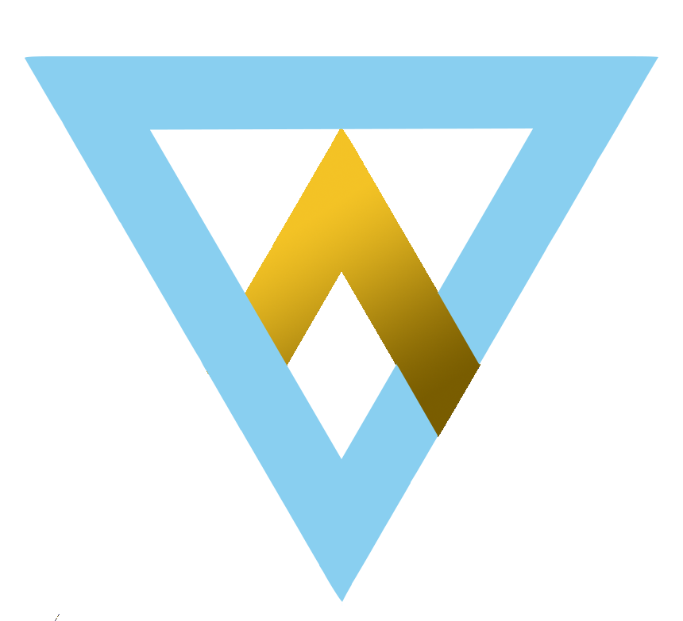

I use Teksji as my screen name, since it has never been used before and I like that as a sign of my individuality.
Although I am not as knowledgeable as other gamers when it comes to terminologies, I just happen to enjoy playing games such as
Look at that, Kazuha supporting Bennett! I came for the gameplay, I stayed for the lore and cinematography. Gacha games are not
really my thing, but good thing that they balanced the elements well such as partnering gacha with a plot, events and the fact that.
it is a free-to-play game. I'm a mobile phone player wishing to upgrade my PC specs very soon ><
I started playing two years after its release and my skills aged pretty well. I quite lack the determination to push to mythical glory,
even when others keep telling me that I should because I could. Pretty crazy how I went from support role to carry role. I still can
do support when necessary. Plus, that made me calmer despite its players having stress issues haha
I'm fairly new to this game and I have yet to be fully familiar with the mechanics. I'm quite doing well while following the meta.
And I experience being the last commander standing in the carousel!
I also played the League of Legends itself, Minecraft, Rise of Kingdoms, Albion Empire, etc. And I learned so much about the games
and its community. There's still a lot of games I'd like to play, but it still depends on my device.
I like different kinds of writing, especially poetry and narratives! Sometimes poetry can be songs too, and I used to write songs
for anyone special to me. I quite lack the creativity because I write about things that make sense.
There it goes for singing, dancing, and playing instruments. These are some of the skills that I've learned along the way and even
if I don't do these now because I don't have time and resources for it, whenever I do I still ace it heh
This is also one of the things that I can already do well and relearn over and over, whether it was a traditional art, digital art, or even photoshop (I edited my profile icon lol) and video editing.
This was my first skill or talent, and I learned it when I was around 5.
Here I used figma to speedrun a sample website layout for our project proposals in Microservices Architecture
This is HTML5 website I made for the scraping project last semester hehe (yes I also made and named the logo Retreeve)
Our logo I made for this semester's duo group Quarx in Microservices. Trust me there's a lot of meaning to it haha
This one was my Figma design for smart healthcare monitoring mobile app for the Big Data project last semester.
(I have to put these in my portfolio lolll)
I was quite a late bloomer because I couldn't afford going to a cinema or having a cable. But now that I do, it feels good to catch up.
It's pretty obvious because I know a lot of things, and I do love learning to all extent. Even if it means doing a mistake to learn from it.
I want to bring this up because, although I don't intend to promote toxic positivity, after all the years of being broken and not really enjoying every success
I've reached due to my serious mental condition and unlucky events, I am finally managing to be the happiest person I've ever been,
and I want to live further instead of otherwise to hopefully share that happiness with others.